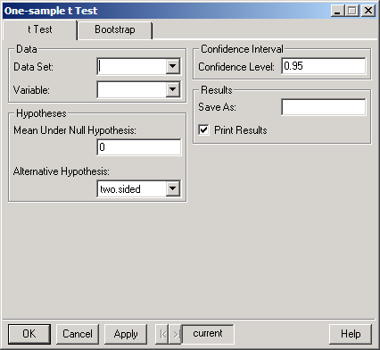
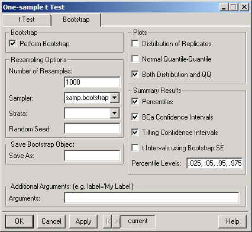

Compare Samples One Sample/Resample t Test. The dialog shown below appears.
Compare Samples One Sample/Resample t Test. The dialog shown below appears. S+Resample GUI Reference
|
Single Mean: t Test, Resample
A one-sample t-test is used to test whether the mean for a variable has a particular value. The main assumption in a t-test is that the data comes from a Gaussian (normal) distribution. If this is not the case, then a nonparametric test, such as the Wilcoxon signed-rank test, may be a more appropriate test of location, and bootstrapping more appropriate for confidence intervals.
The resampling methods support stratified sampling.
To perform one-sample t test
Choose Statistics Compare Samples One Sample/Resample t Test. The dialog shown below appears.
t Test Page
 Click individual fields in the dialog below for more specific information.
Click individual fields in the dialog below for more specific information.

Bootstrap Page
Click individual fields in the dialog below for more specific information.

Related S-Plus language functions:
t.test
Resampling functions:
bootstrap, bootstrap2, plot.resamp, qqnorm.resamp, summary.resamp, limits.percentile, limits.bca, limits.tilt, limits.t.